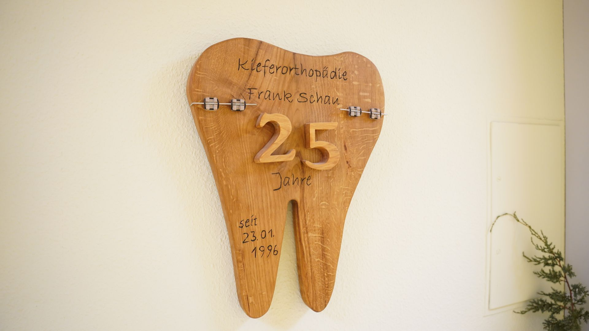
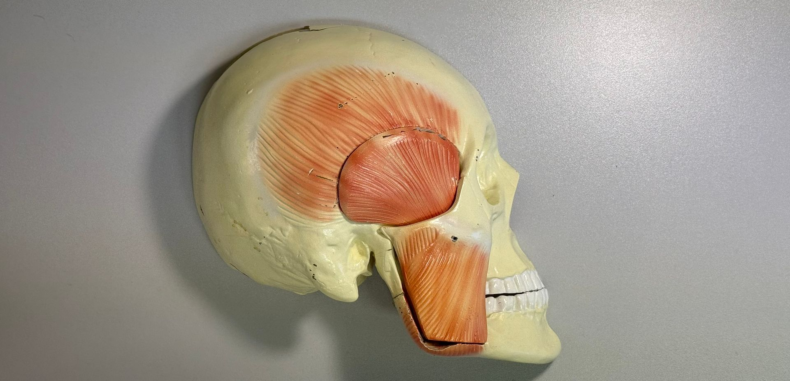
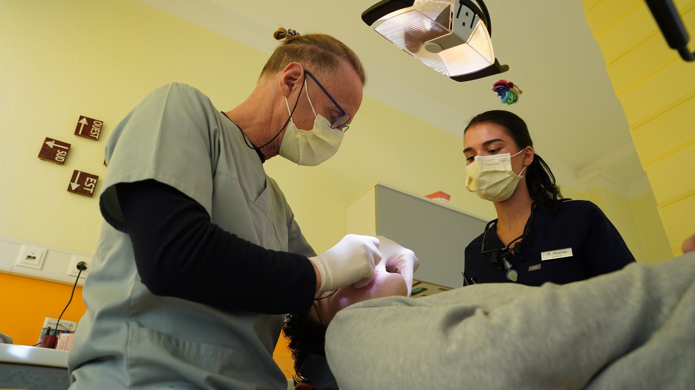

Willkommen in unserer Praxis für Kieferorthopädie
Spezialisiert auf ganzheitliche Kieferorthopädie seit 1996
Über unsere Praxis
Seit der Gründung im Januar 1996 in Döbern haben wir uns auf eine ganzheitliche kieferorthopädische Behandlung spezialisiert. Von Anfang an war es uns wichtig, nicht nur auf gerade Zähne, sondern vor allem auf die Funktion des gesamten Kausystems großen Wert zu legen – insbesondere auf die Atmung und ihre Bedeutung für die gesunde Entwicklung.
Unsere Entwicklung
Was klein begann, wuchs stetig: Nach 14 erfolgreichen Jahren in Döbern sind wir im Januar 2010 nach Forst (Lausitz) umgezogen und haben unsere Praxis deutlich vergrößert. 2014 wurde unser Team durch die erste Assistentin erweitert.
Seit Juli 2017 verstärkt MSc. Frau Isabelle Joel unser Team als Kieferorthopädin. Im Jahr 2023 kam Herr Drilon Maloku als Assistenzzahnarzt hinzu, und seit Ende 2025 ist Frau Aurela Maloku ebenfalls als Assistenzzahnärztin bei uns tätig.

CMD-Behandlung / Kiefergelenkerkrankungen
Von Beginn an gehört die Behandlung von craniomandibulären Dysfunktionen (CMD) – auch bekannt als Kiefergelenkerkrankungen – zu unseren Kernkompetenzen. Wir legen großen Wert darauf, funktionelle Zusammenhänge zu erkennen und zu behandeln.

Ganzheitlicher Ansatz
Für uns steht die Funktion im Mittelpunkt: Atmung, Kiefergelenke und die harmonische Entwicklung des gesamten Kausystems sind wesentliche Faktoren für eine erfolgreiche kieferorthopädische Behandlung.

Übrigens...
Manchmal haben wir auch vierbeinige Patienten! Wir hatten bereits mehrere Hunde in Behandlung – eine besondere Herausforderung, die zeigt, dass kieferorthopädisches Wissen auch in ungewöhnlichen Situationen helfen kann.

Kontakt
Sprechzeiten
Mo, Di, Do: 8:00-12:00 & 13:00-18:00
Mittwoch: 8:00-12:00 & 13:00-17:00
Freitag: 8:00-12:00
kfo-forst@posteo.de
Telefon
03562 9876002
Standort
Robert-Koch-Straße 35
03149 Forst (Lausitz)